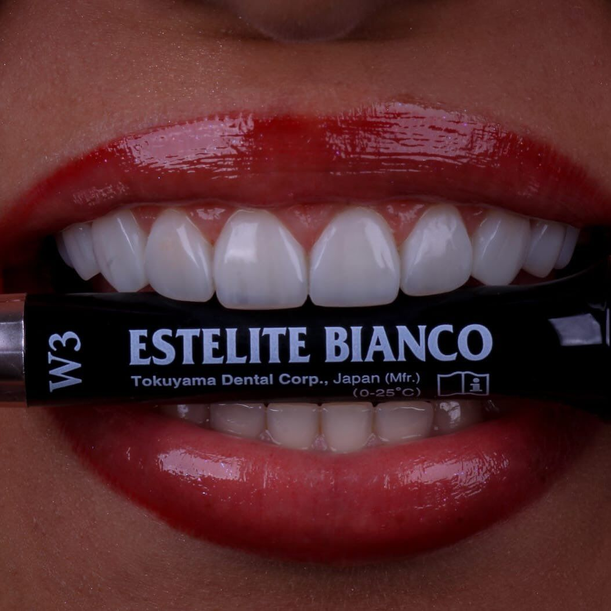
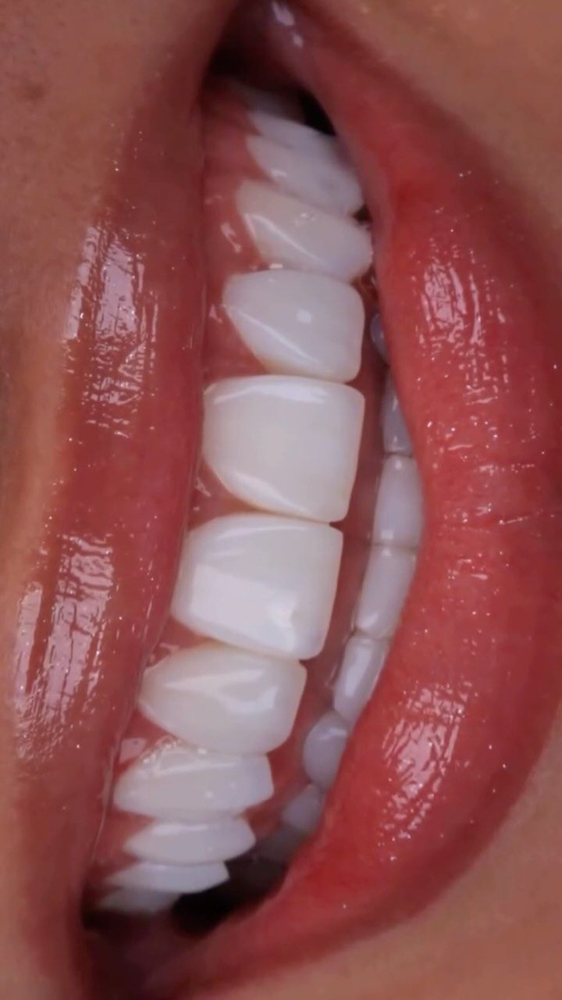
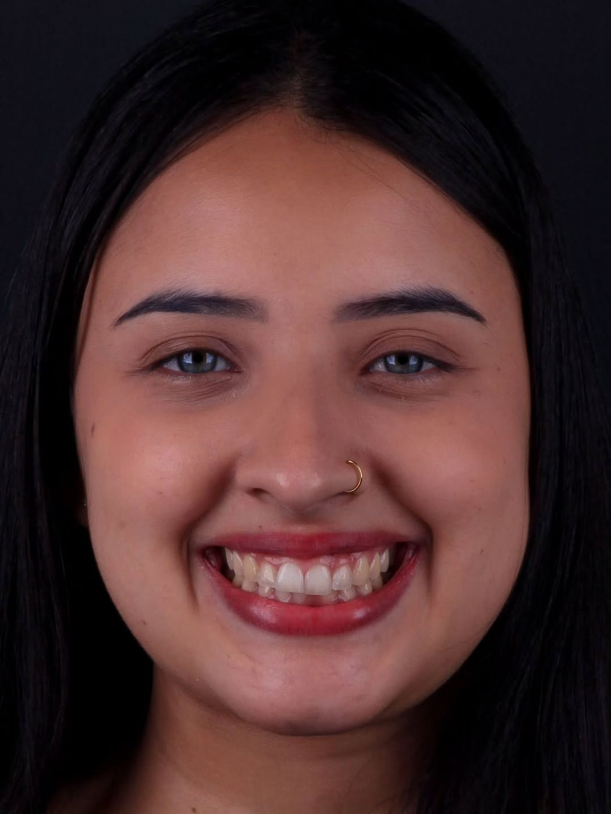
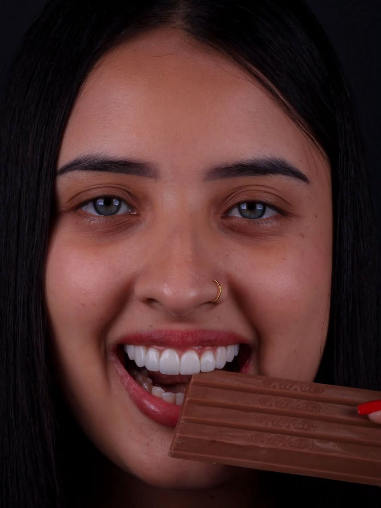
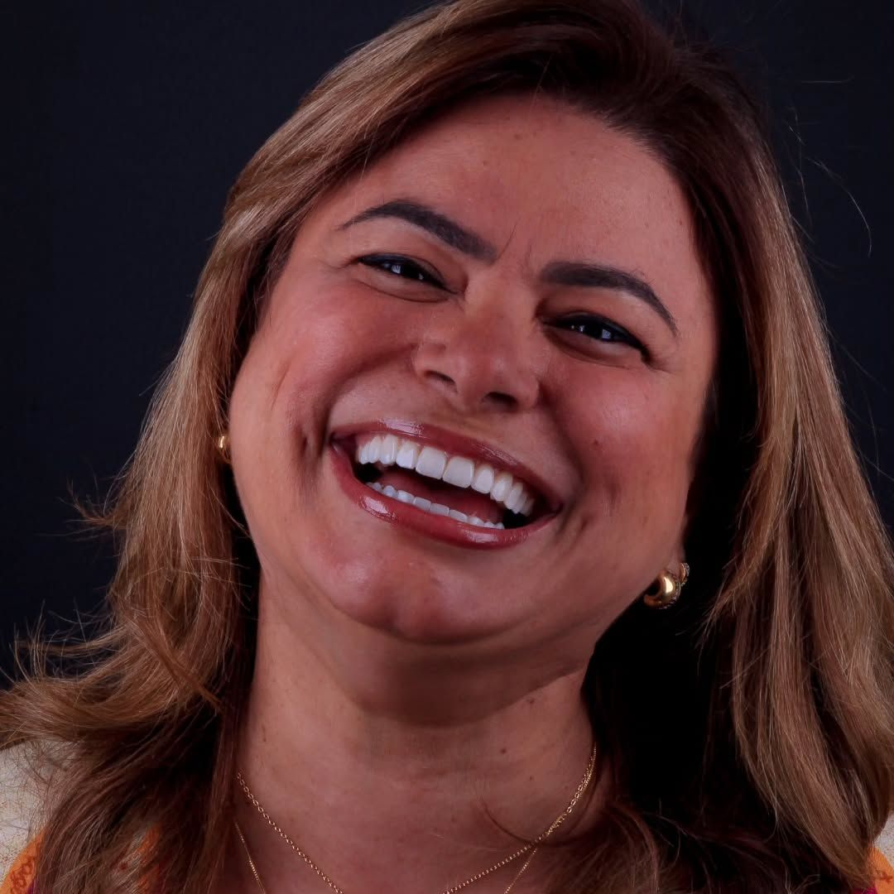
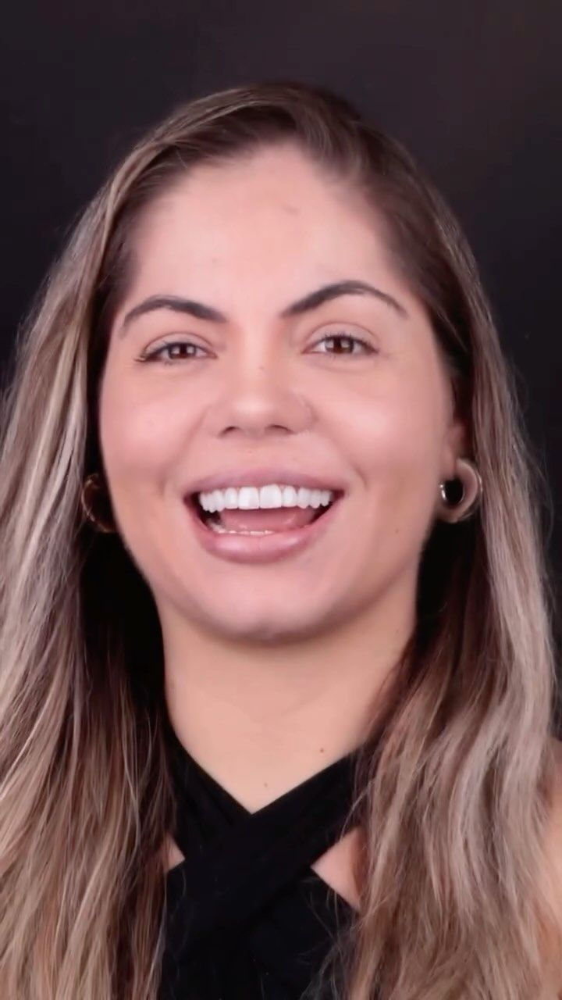
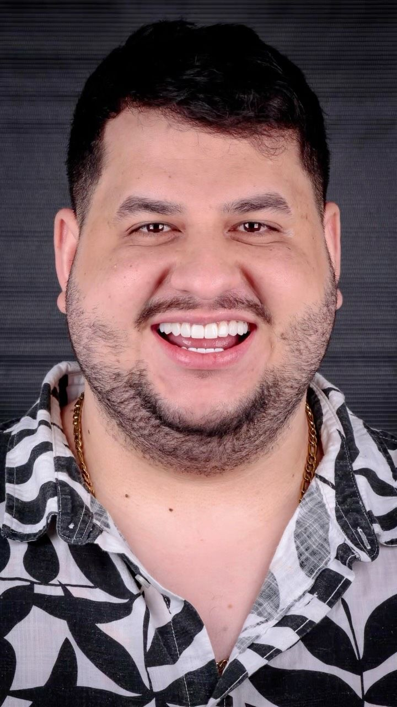
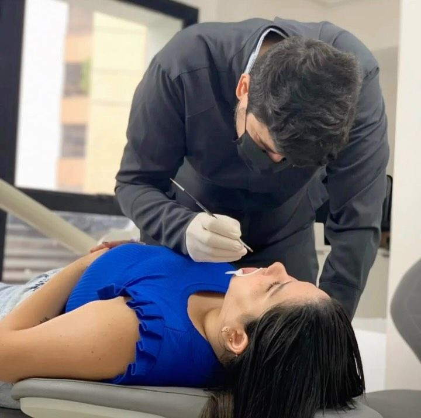
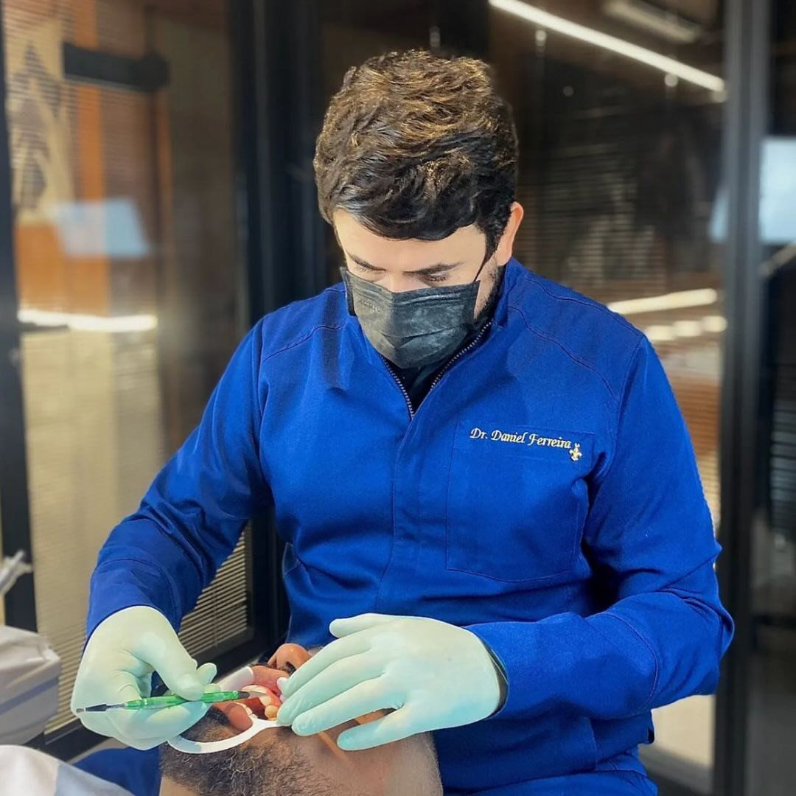
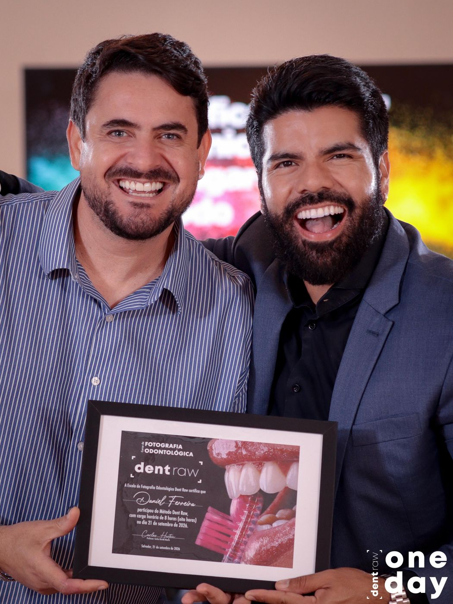

Suas lentes são planejadas para o seu rosto, com resultado natural e sem desgaste dos dentes.
Indicação e prazo definidos após avaliação clínica.


Dentes amarelados, pequenos, desalinhados ou desgastados fazem muita gente sorrir de boca fechada, desviar o rosto na foto e se sentir insegura até numa conversa. Com o tempo, isso pesa na autoestima.
Talvez você já tenha pensado em fazer lentes, mas tenha medo de ficar com aquele “dente de novela”, branco demais e artificial. Esse receio é justo, e é exatamente o que o Dr. Daniel evita.
Aqui, o objetivo é um sorriso bonito, natural e em harmonia com o seu rosto. Do tipo que parece que você nasceu com ele.
As lentes em resina são camadas finas de resina composta, aplicadas e esculpidas diretamente sobre a parte da frente dos dentes. Elas corrigem cor, formato, tamanho e pequenas imperfeições, sem desgastar o seu dente natural. Diferente da porcelana, que é feita em laboratório, a resina é modelada na hora e fica pronta em uma única sessão.
Cada sorriso é planejado antes de qualquer material tocar o dente. Veja alguns casos do Dr. Daniel.





Cor escolhida para o seu tom de pele e formato que respeita seus dentes. Nada de branco artificial.
A resina é aplicada sobre o dente, sem precisar lixar a sua estrutura natural.
Feito em uma única sessão. Você entra com a insegurança e sai sorrindo.
Mais confiança para sorrir em fotos, conversas e no trabalho, sem pensar duas vezes.
Você fala com a nossa equipe e agenda sua avaliação gratuita no melhor horário para você.
O Dr. Daniel entende o que te incomoda, avalia sua saúde bucal e planeja proporção, formato e cor do seu sorriso.
As lentes são esculpidas diretamente nos dentes, em uma única sessão, conforme as condições clínicas.
Você recebe as orientações de cuidado e manutenção para o seu sorriso durar anos.
Lente em resina não é colocar “dente de mentira”. É planejamento, proporção e naturalidade. O Dr. Daniel estuda cada sorriso antes de tocar em qualquer material, porque estética sem técnica não dura.

Cada caso é estudado antes de qualquer intervenção. Nada no “achismo”.
O tom é escolhido para combinar com a sua pele e o seu rosto.
Respeito à anatomia dos seus dentes, sem exagero.
Atenção individual do primeiro contato à manutenção.

Com mais de 10 anos de atuação e mais de mil pacientes atendidos, o Dr. Daniel une técnica avançada e sensibilidade estética para entregar sorrisos naturais, em harmonia com o rosto de cada paciente.
Muita gente chega ao consultório achando que precisa de um tratamento longo e sai com uma solução mais simples e rápida. A forma de trabalhar é sempre a mesma: primeiro entender o que o seu sorriso realmente precisa, depois indicar o caminho certo.

“Dr. Daniel é um cara incrível, tem um trabalho muito meticuloso, está sempre perguntando o que o cliente achou, tentando entender a dor e supri-las. Música boa no ambiente e um trabalho incrível. Vale pelo resultado do trabalho e pela experiência. Gostei e recomendo muito.”
Não deixe a insegurança decidir por você. Agende sua avaliação gratuita e descubra se as lentes em resina são o caminho certo para o seu sorriso.
Não quando são bem planejadas. A cor, o formato e a proporção são definidos para o seu rosto antes do procedimento, justamente para evitar o “dente de novela”. O objetivo é um sorriso que pareça seu.
Não. As lentes em resina são aplicadas sobre o dente sem desgaste da estrutura natural. Essa é uma das principais diferenças em relação às lentes de porcelana.
Em média, de 5 a 6 anos ou mais, dependendo dos cuidados e da manutenção. Na avaliação, o Dr. Daniel explica como cuidar para o resultado durar.
Em uma única sessão. Na maioria dos casos você sai do consultório no mesmo dia com o sorriso pronto, conforme a avaliação clínica.
A resina é feita em uma sessão, sem desgaste e com excelente custo-benefício. A porcelana é feita em laboratório, exige desgaste, tem custo maior e maior resistência. Na avaliação, você entende qual faz mais sentido para o seu caso.
Antes das lentes, sua saúde bucal precisa estar em dia. Se houver cárie ou inflamação, ela é tratada primeiro, para garantir um resultado bonito, seguro e duradouro.
Não. A avaliação é gratuita e presencial. É nela que o Dr. Daniel confirma se você é candidato às lentes em resina e apresenta o planejamento do seu sorriso.